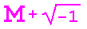
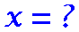
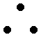

Today a close friend who has let down her boundaries will have a dilemma. Though you have several axes to grind with her, you should not let this be a factor. If she can count on you, you will get closure.
Today you will intersect a radical from class, a tan gent of average height. He will be a cute guy, but obtuse. Help him by reading his abstract, so he can get his degree and reach his proper rank.
Today you will be in your prime. A clique of friends will give you a ring and hold an enjoyable function. You will feel connected to this circle of friends, and will be the center of attention.
You have reached a critical point in your life. You are on edge and have about reached your limit. This minor identity crisis has kept you in knots for some time. Seek a group of solid friends to set things right.
M and I (May 21-Jun 21) 
Today you will get a visit from an ex, though you won't know why. The jerk is still square, a real number, quite a character. He will feed you a line about being a pair again, and this will cause an argument, making you tensor and tensor.
Today you should stay in bed and catch some Z's. Stay horizontal and sleep like a log. This complete lack of activity will mean a minimum of stress, but it is also a product of the power you have.
ANSWER (Jun 22-Jul 22) 
Don't commute today. If you go by plane, the floor will drop out. If your mode is by car, you will hit a field of trees in the median. Even walking on your own digits will result in a funeral plot.
This period of your life will be similar to one year ago, when your life was simple and ordered. It is integral that you be careful, lest you do commit an improper error. Look for a sign, but stick to your roots.
E-O (Jul 23-Aug 22)
Today life will throw you a curve. You and a loved one will diverge, and the distance will feel empty. Though you will see her less, her existence proves your perfect friendship is in a separate category. Don't let it make a difference.
Keep an open mind today. Stop projecting and admit the magnitude of your problems for a second. If you are analytic, the origin of your exact difficulty will soon be clear, and your troubles will decrease by half.
ERGO (Aug 23-Sep 22) 
On the surface, today will seem like an irrational day, continuously full of problems. The constant chaos will be far from ideal. But the day will be less negative and more normal than it first appears. Stay to your regular routine and minimize variation.

Today will be an odd day. You will face many complex problems, all equally frustrating. But you will maximize your joy by finding value in all of them, and it will turn out to be a fine day.